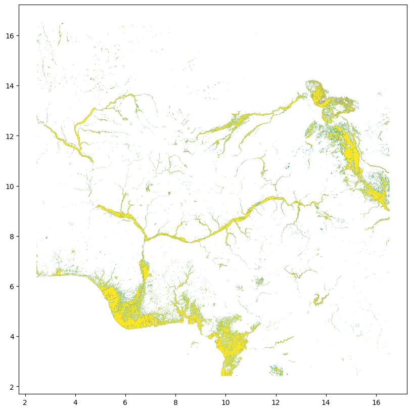

Code
%load_ext jupyter_black
%load_ext autoreload
%autoreload 2See here for the bucket holding the data and documentation. Some notes from the README:
This folder contains inundation history files created by Google’s floods team based on the GLAD dataset. These files provide historical data on how often each 128-meter pixel in the world has been wet between 1999 and 2020, derived from satellite imagery.
Each GeoJSON file contains three layers, each representing a different level of inundation risk: - High_risk: Areas wet at least 5% of the time. - Medium_risk: Areas wet at least 1% of the time. - Low_risk: Areas wet at least 0.5% of the time.
Each layer contains a single Shapely MultiPolygon geometry. Areas not covered by any of the polygons were wet less than 0.5% of the time. Constant water bodies have been removed from all layers.
Let’s imagine that we want to pull in all the data covering Nigeria…
%load_ext jupyter_black
%load_ext autoreload
%autoreload 2import geopandas as gpd
import requests
import os
import re
from shapely.ops import unary_union
import pandas as pd
from tqdm.notebook import tqdm
from src.datasources import codabgdf = codab.load_codab(admin_level=0)
bounds = gdf.total_bounds
min_lng, min_lat, max_lng, max_lat = boundsdef list_available_geojson_files(bucket_name="flood-forecasting"):
url = f"https://storage.googleapis.com/storage/v1/b/{bucket_name}/o?prefix=inundation_history/data/&maxResults=1000"
all_files = []
next_page_token = None
print("Listing files in Google Cloud Storage bucket...")
while True:
# Add page token if we're paginating
request_url = url
if next_page_token:
request_url += f"&pageToken={next_page_token}"
# Request the list of files
response = requests.get(request_url)
if response.status_code != 200:
print(f"Error listing files: HTTP {response.status_code}")
break
data = response.json()
items = data.get("items", [])
# Process each file
for item in items:
name = item["name"]
if name.endswith(".geojson"):
# Extract coordinates from filename using regex
pattern = r"inundation_history_([-\d\.]+)_([-\d\.]+)_([-\d\.]+)_([-\d\.]+)\.geojson"
match = re.search(pattern, name)
if match:
min_lat, min_lng, max_lat, max_lng = map(
float, match.groups()
)
all_files.append(
{
"name": name,
"min_lat": min_lat,
"min_lng": min_lng,
"max_lat": max_lat,
"max_lng": max_lng,
"url": f"https://storage.googleapis.com/{bucket_name}/{name}",
}
)
# Check if there are more pages
next_page_token = data.get("nextPageToken")
if not next_page_token:
break
print(f"Found {len(all_files)} GeoJSON files")
return all_files
def find_files_for_region(files_info, min_lat, min_lng, max_lat, max_lng):
relevant_files = []
for file_info in files_info:
if (
file_info["min_lat"] <= max_lat
and file_info["max_lat"] >= min_lat
and file_info["min_lng"] <= max_lng
and file_info["max_lng"] >= min_lng
):
relevant_files.append(file_info)
return relevant_files
def download_geojson_file(file_info, download_dir="temp/inundation_data"):
os.makedirs(download_dir, exist_ok=True)
filename = os.path.basename(file_info["name"])
local_path = os.path.join(download_dir, filename)
if os.path.exists(local_path):
return local_path
response = requests.get(file_info["url"])
if response.status_code == 200:
with open(local_path, "wb") as f:
f.write(response.content)
return local_path
else:
print(f"Failed to download {filename}: HTTP {response.status_code}")
return None# Step 2: List available files in the bucket
all_files = list_available_geojson_files()
# Step 3: Find files covering Nigeria
nigeria_files = find_files_for_region(
all_files, min_lat, min_lng, max_lat, max_lng
)
print(f"Found {len(nigeria_files)} files that cover parts of Nigeria")
# Display a few files for verification
pd.DataFrame(nigeria_files[:5])Listing files in Google Cloud Storage bucket...
Found 1626 GeoJSON files
Found 24 files that cover parts of Nigeria| name | min_lat | min_lng | max_lat | max_lng | url | |
|---|---|---|---|---|---|---|
| 0 | inundation_history/data/inundation_history_10.... | 10.190 | 13.544 | 13.180 | 16.535 | https://storage.googleapis.com/flood-forecasti... |
| 1 | inundation_history/data/inundation_history_10.... | 10.331 | 10.620 | 13.320 | 13.544 | https://storage.googleapis.com/flood-forecasti... |
| 2 | inundation_history/data/inundation_history_10.... | 10.442 | 7.785 | 13.423 | 10.620 | https://storage.googleapis.com/flood-forecasti... |
| 3 | inundation_history/data/inundation_history_10.... | 10.524 | 5.060 | 13.493 | 7.785 | https://storage.googleapis.com/flood-forecasti... |
| 4 | inundation_history/data/inundation_history_10.... | 10.579 | 2.460 | 13.532 | 5.060 | https://storage.googleapis.com/flood-forecasti... |
# Step 4: Download relevant files
downloaded_files = []
print("Downloading relevant files...")
for file_info in tqdm(nigeria_files):
file_path = download_geojson_file(file_info)
if file_path:
downloaded_files.append(file_path)
print(f"Downloaded {len(downloaded_files)} files")Downloading relevant files...Downloaded 24 filesrisk_gdfs = []
for file in downloaded_files:
gdf_ = gpd.read_file(file)
risk_gdfs.append(gdf_)
combined = pd.concat(risk_gdfs)
grouped = combined.groupby("name")
# Combine geometries for each group using unary_union
combined_geoms = {}
for name, group in grouped:
combined_geom = unary_union(group.geometry.values)
combined_geoms[name] = combined_geom
gdf_combined = (
gpd.GeoDataFrame(
geometry=[combined_geoms[name] for name in combined_geoms.keys()],
index=combined_geoms.keys(),
)
.reset_index()
.rename(columns={"index": "risk"})
)gdf_combined.to_file("temp/inundation_data/combined_nga.shp")/Users/hannahker/Desktop/ds-aa-nga-flooding/venv/lib/python3.13/site-packages/pyogrio/geopandas.py:662: UserWarning: 'crs' was not provided. The output dataset will not have projection information defined and may not be usable in other systems.
write(ax = gdf_combined.plot(figsize=(12, 10), cmap="viridis")